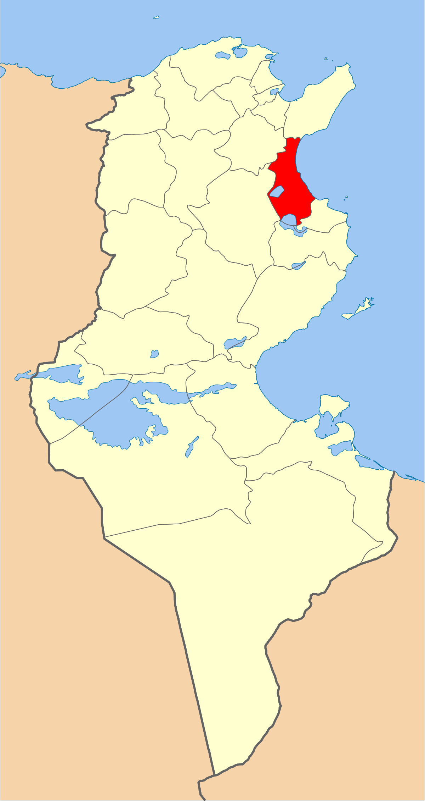
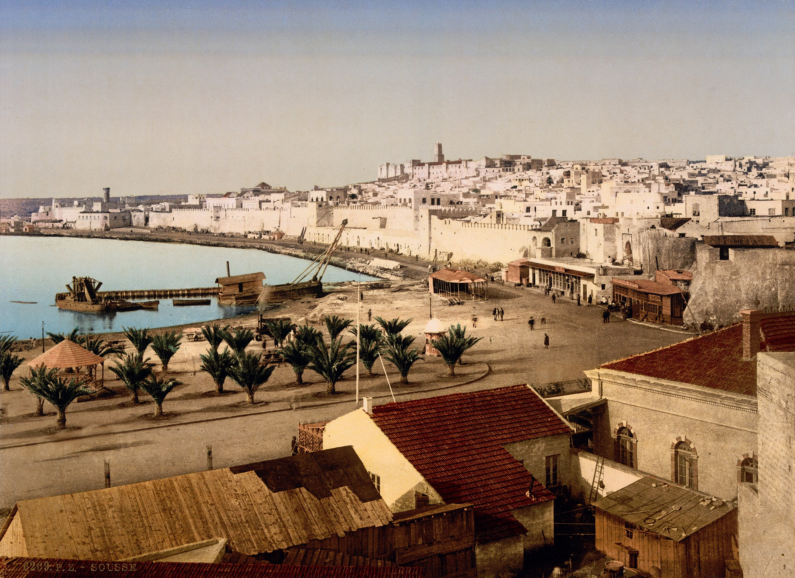
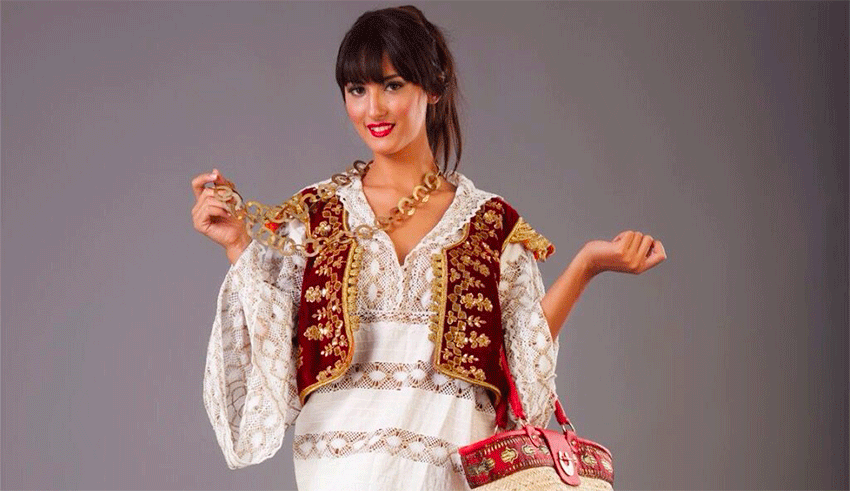
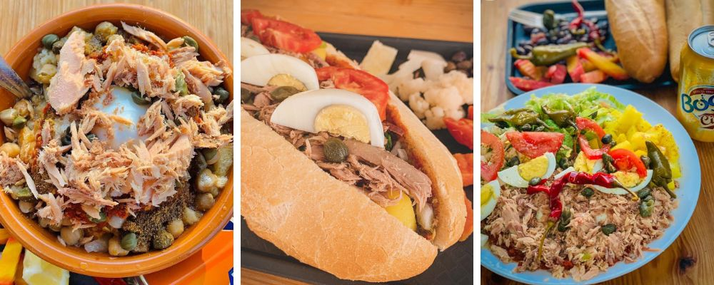
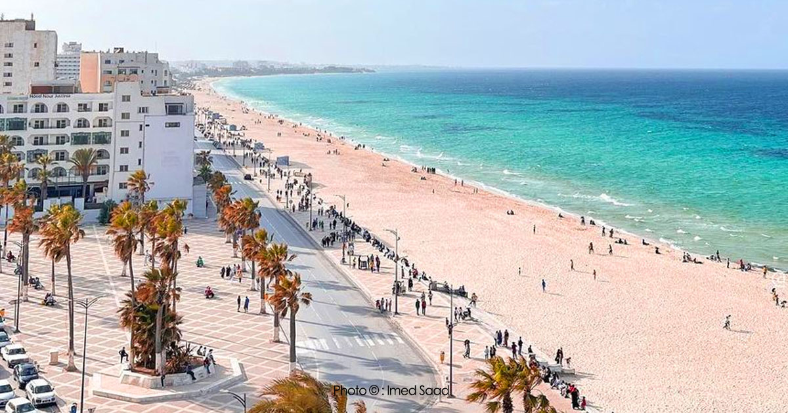
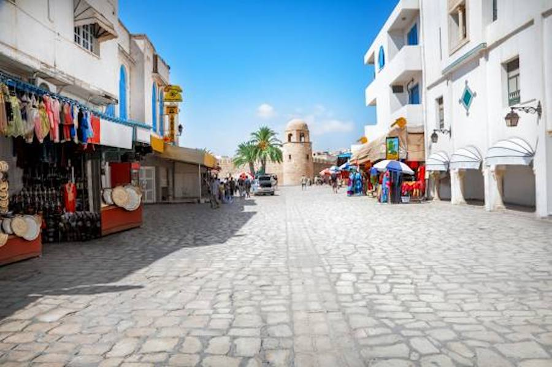

Sousse
Sousse est une ville portuaire de l'Est de la Tunisie, située à 143 kilomètres au sud de Tunis, et ouverte sur le golfe d'Hammamet (mer Méditerranée). Capitale du Sahel tunisien — elle est parfois surnommée la « perle du Sahel » — et chef-lieu du gouvernorat du même nom, elle est la troisième municipalité du pays après Tunis et Sfax, et la quatrième agglomération, Nabeul étant la troisième. La médina de Sousse est inscrite au patrimoine mondial de l'Unesco depuis 1988.
Ribat de Sousse
Musée archéologique de Sousse
Grande Mosquée de Sousse
Musée Dar Essid
Quelques chiffres
Superficie
45 km2 km2
Nombre de maisons
62 000
Habitants
221 530 hab.
Localisation
Sousse occupe un emplacement géographique au centre de la Tunisie, sur le littoral du Sahel donnant sur la mer Méditerranée bordant l'Est du pays. La ville s'étend sur 45 km2 et se situe à 25 mètres d'altitude. En 2016, l'aire urbaine de Sousse-Monastir est la seconde du pays et comprend plus d'un million d'habitants3. La population de la municipalité de Sousse atteint 221 530 habitants en 2014 pour une densité de près de 5 000 habitants/km2 alors que son agglomération (Grand Sousse) avoisine les 400 000 habitants en 2004, 690 000 en 2015 puis 710 000 habitants en 2017, ce qui la place en quatrième position des agglomérations du pays.

Histoire
C’est au Xe siècle avant J.CH.que son paisible rivage est choisi par des navigateurs phéniciens, venus de Tyr au sud-Liban, pour fonder un comptoir commercial promis à une destinée exceptionnelle. Une cité maritime, dynamique et prospère, baptisée Hadramaout, voit rapidement le jour, premier jalon d’un parcours historique tumultueux mais flamboyant. Mêlée à toutes les péripéties du long conflit entre Rome et Carthage, lors des fameuses Guerres Puniques, la ville redevient dès le premier siècle de l’ère chrétienne une place commerciale florissante sous le nom d'Hadrumetum. La Pax Romana lui permet de connaitre un grand essor dans tous les domaines. De plus en plus active et riche, elle se couvre alors d’édifices publics et privés grandioses : thermes, temples, théâtres, demeures luxueuses… Au IIIe siècle de notre ère, elle est un des fleurons de la province romaine d’Afrique, et son rayonnement est tel qu’elle est promue par l’empereur Dioclétien capitale de tout le centre de la Tunisie.
Culture

hover me
hover me
hover me
hover me